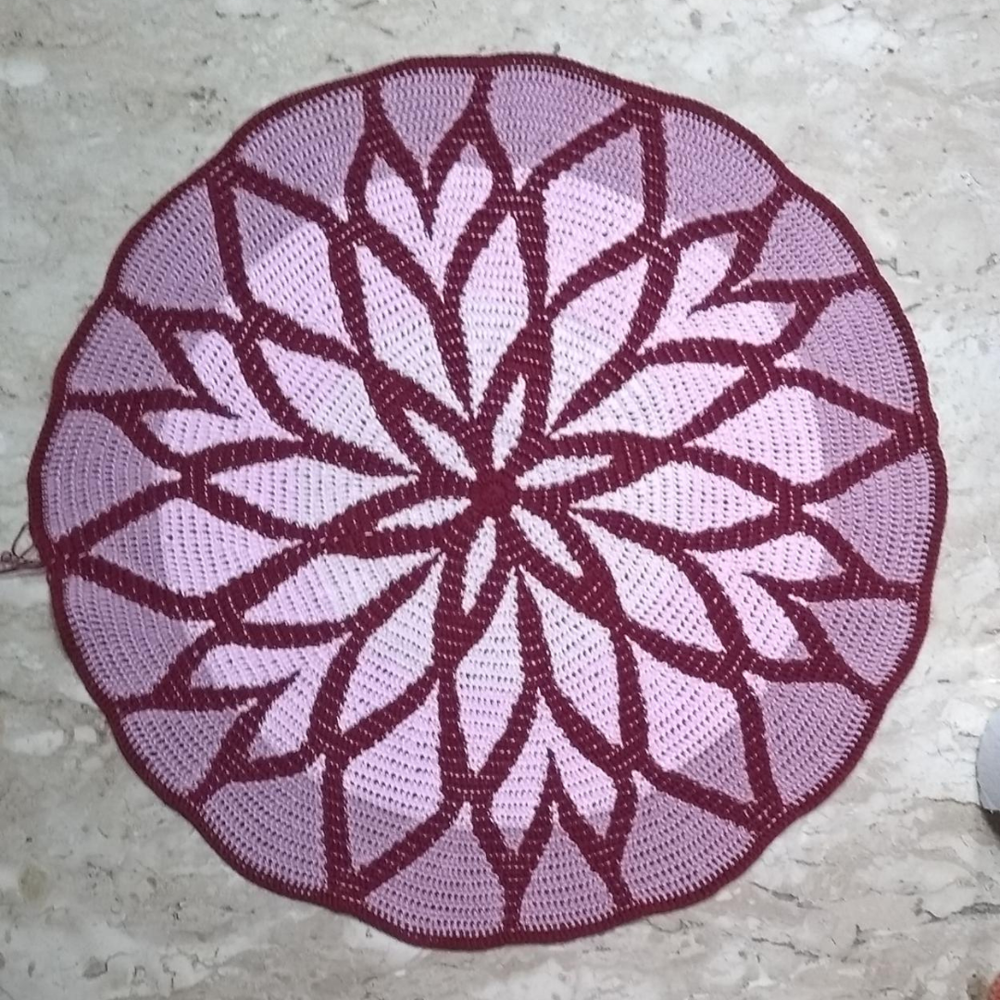

Kimono Caleidoscópio
Destaque
Kimono mangas curtas, fio 100% algodão e 100% handmade.
Crochês
-
Ver mais

Vestido confeccionado mesclando tecnicas de crochê com tule trabalhado.
-
Ver mais

Conhecida pela sua complexidade, pode ser utilizada tanto em decoração de quarto e sala quanto como um belo quadro para destacar sua parede.
-
Ver mais
Confeccionada com uma linha 100% algodão essa mandala é ideal para cobrir o seu sofá.